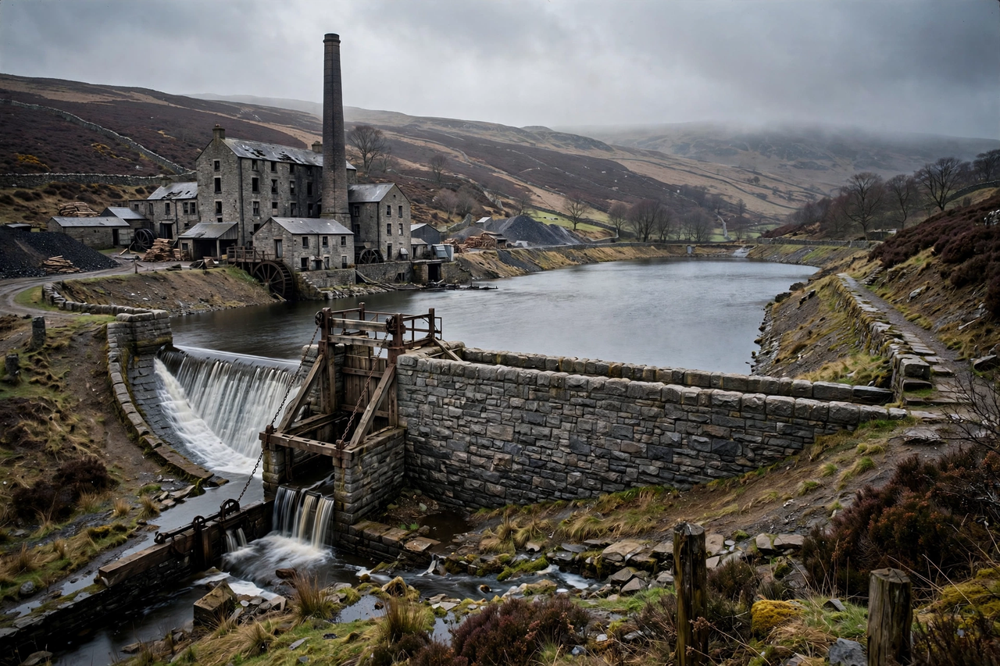

Rylands v Fletcher [1868] UKHL 1 is a landmark English tort law case that established the rule of strict liability for the escape of dangerous things accumulated on land. A defendant who, for their own purposes, brings onto their land and keeps there something likely to do mischief if it escapes, is liable for the natural consequences of its escape — even without any negligence on their part. The rule remains influential throughout the Commonwealth and in American strict-liability doctrine.
| Rylands v Fletcher | |
| Court | House of Lords (on appeal from Exchequer Chamber) |
|---|---|
| Decided | 17 July 1868 |
| Citation | (1868) LR 3 HL 330 |
| Judges | Lord Cairns LC; Lord Cranworth |
| Keywords | Strict liability; escape; non-natural use of land |

Fletcher's coal mine was flooded when Rylands' reservoir burst through old mine workings.
Thomas Rylands, a Lancashire mill owner, employed independent contractors to build a reservoir on his land to supply his mill with water. Unknown to all, the reservoir was built over disused mine shafts that connected to the neighbouring coal mine of John Fletcher. When the reservoir was filled, water burst through the shafts and flooded Fletcher's mine, causing substantial damage. The contractors had been negligent in failing to discover the shafts, but Rylands himself was not personally at fault — raising the question whether he could be liable without negligence.
In the Exchequer Chamber, Blackburn J articulated the famous rule:
"The person who for his own purposes brings on his lands and collects and keeps there anything likely to do mischief if it escapes, must keep it in at his peril, and, if he does not do so, is prima facie answerable for all the damage which is the natural consequence of its escape."
The House of Lords affirmed, with Lord Cairns adding the qualification that the use of land must be "non-natural" — a requirement that later case law made central. Defences recognised included act of God, the plaintiff's own default, consent, and statutory authority.
In Cambridge Water Co v Eastern Counties Leather plc [1994] the House of Lords held that foreseeability of the relevant type of damage is required, aligning the rule with nuisance. In Transco plc v Stockport MBC [2003] the Lords refused to extend the rule and described "non-natural use" narrowly, confining it largely to extraordinary and unusual uses — ordinary industrial activity and domestic water supplies fall outside it. Australia's High Court went further in Burnie Port Authority v General Jones Pty Ltd (1994), absorbing the rule into ordinary negligence. In the United States, the rule influenced the doctrine of strict liability for abnormally dangerous activities in the Restatements of Torts.